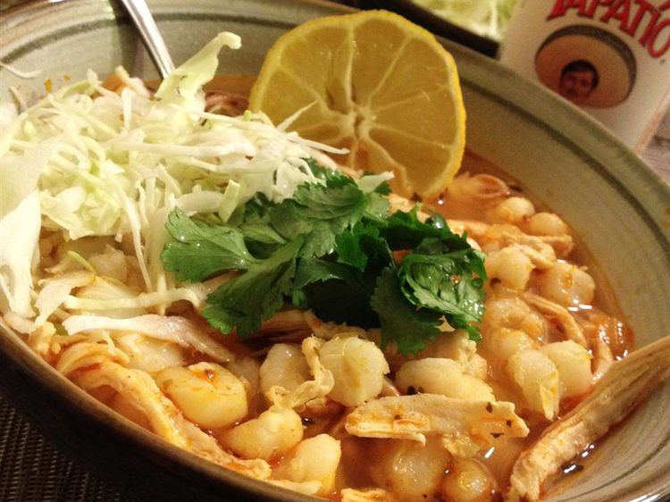

Home
Chicken Pozole

Description
This easy chicken pozole recipe is one of many great Mexican Christmas traditions, or simply delicious whenever you want to eat something warm and comforting.
Ingredients
- 4 tablespoons vegetable oil, divided
- 2 ½ pounds skinless, boneless chicken breast halves
- 1 onion, chopped
- 3 cloves garlic, minced
- 2 ½ quarts chicken broth/li>
- 3 cups water
- 4 tablespoons chili powder, or to taste
- 2 teaspoons salt, or to taste
- 1 teaspoon crumbled dried oregano
- 3 cups white hominy, rinsed and drained
- 10 tostada shells
Directions
- Gather the ingredients.
- Heat 2 tablespoons oil in a large, deep skillet over medium-high heat. Add chicken breasts and cook in hot oil until no longer pink and the juices run clear, about 20 minutes. Remove chicken to a plate and cool completely, then shred chicken with a fork. Drain grease from the skillet.
- Heat remaining 2 tablespoons oil in the same skillet over medium-high heat. Add onion and garlic; cook and stir until soft and transparent, about 5 minutes.
- Return shredded chicken to the skillet. Stir in chicken broth, water, chili powder, salt, and oregano. Reduce heat to low, cover, and cook for about 90 minutes.
- Stir in hominy and cook until tender, about 15 minutes. Taste to adjust seasonings, adding more salt and chili powder, if desired. Serve in soup bowls with a tostada shell.